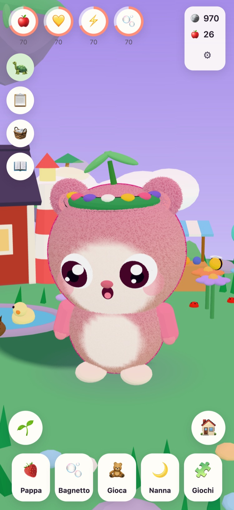
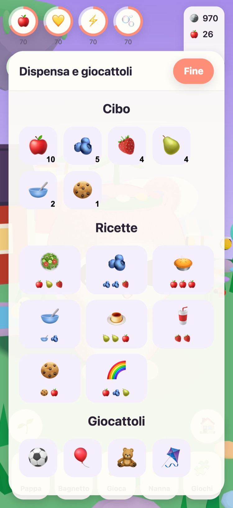
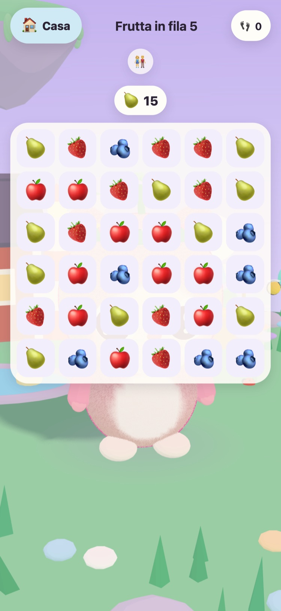
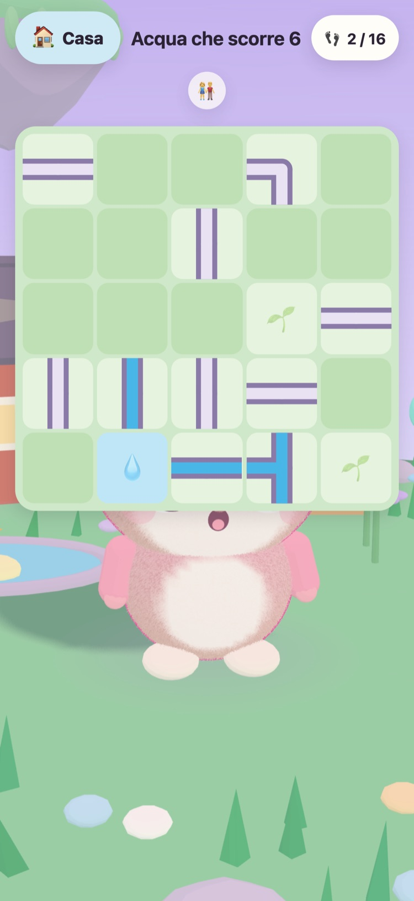
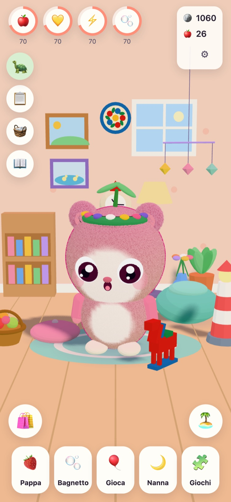
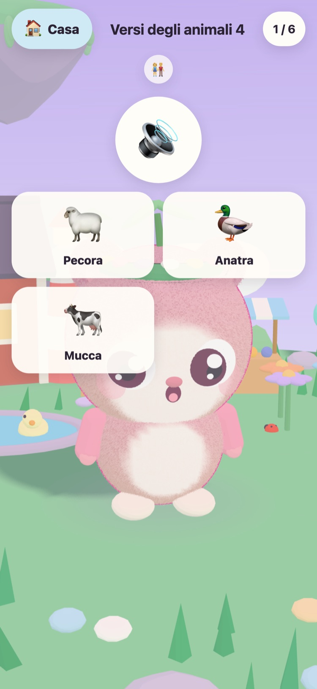

JUNOLittle Worlds
Fai schiudere un Juno, prenditene cura e risolvi puzzle tranquilli che risvegliano un'isola galleggiante. Un gioco tranquillo per bambini dai 6 ai 10 anni, su iPhone e iPad.
Ciao! Ho trovato tre uova calde. Qual è il tuo?
- Niente pubblicità
- Niente tracciamento
- Nessun account
- Niente timer né pressioni






Un piccolo amico tutto suo
Nonno Tintin, la vecchia tartaruga che si prende cura dell'Isola dei Prati, ha trovato tre uova calde. Tuo figlio ne sceglie uno e dà un nome a chi nasce. Da quel momento il Juno è suo: da nutrire, lavare, con cui giocare e da mettere a fare il pisolino.
-
Scegli un uovo
Tre uova calde, tre colori. Tuo figlio ne sceglie uno e lo guarda schiudersi.
-
Dagli un nome, vogligli bene
Mangiare, lavarsi, giocare e fare il pisolino. Il Juno mostra come si sente e cresce man mano che cresce la loro amicizia.
-
Risveglia l'isola
Ogni stella dei puzzle riporta la luce sull'Isola dei Prati, finché fiori, api e anatre non tornano a casa.
Mangiare, lavarsi, giocare, dormire
Cibi e giochi diversi, bolle nel bagnetto e un Juno che mostra come si sente. I bisogni scendono piano e mai fino a zero, quindi un Juno non va mai perso.
57 puzzle tranquilli
Frutta in fila, Giardino delle coppie, e Versi degli animali e Suoni dei veicoli con registrazioni vere. Le stelle dipendono dalle mosse, mai dal tempo, e riprovare è sempre gratis.
Un'isola che si risveglia
Il Giardino dei fiori si apre con le sue api, il Laghetto delle anatre si riempie d'acqua e di anatre, e i semi diventano mele e fragole nelle aiuole dell'orto.
Una cameretta da rendere accogliente
Le monete dei puzzle e delle missioni del giorno comprano decorazioni per la cameretta del Juno e vestiti da indossare. Niente nel negozio delle monete costa denaro vero.
Letto ad alta voce
Nonno Tintin legge ogni frase ad alta voce con la sua voce calda, per i bambini che non sanno ancora leggere. Toccalo per riascoltarla.
Un'Area genitori
Dietro un blocco parentale: lingua, lettura ad alta voce, suoni, ora di dormire e un gentile promemoria per fare una pausa. All'ora di dormire il Juno dorme e i puzzle aspettano il mattino.
Parla 21 lingue
Nonno Tintin parla a tuo figlio nella sua lingua. Sceglila nell'Area genitori, oppure lascia che il gioco segua la lingua del dispositivo.
English Svenska Dansk Norsk Suomi Deutsch Nederlands Français Español Italiano Português (Brasil) Polski Русский Ελληνικά Türkçe Bahasa Melayu Kiswahili हिन्दी 日本語 한국어 简体中文
Creato da un nonno
JUNO è stato creato in Svezia da un nonno per sua nipote: un gioco a cui sarebbe felice di vederla giocare. Nonno Tintin, la tartaruga del gioco, è lui.
Per questo le regole sono semplici. Niente che metta pressione, niente che inganni e niente che raccolga qualcosa su tuo figlio.
Gratis, senza pubblicità
JUNO si scarica gratis e non ha pubblicità, tracciamento né account. Tutto quello che fa tuo figlio resta sul tuo dispositivo. Leggi la pagina sulla privacy.
Un adulto può acquistare JUNO Plus o il Pacchetto Inverno nell'Area genitori, dietro il blocco parentale. Sono entrambi acquisti una tantum che puoi ripristinare e condividere con la tua famiglia.